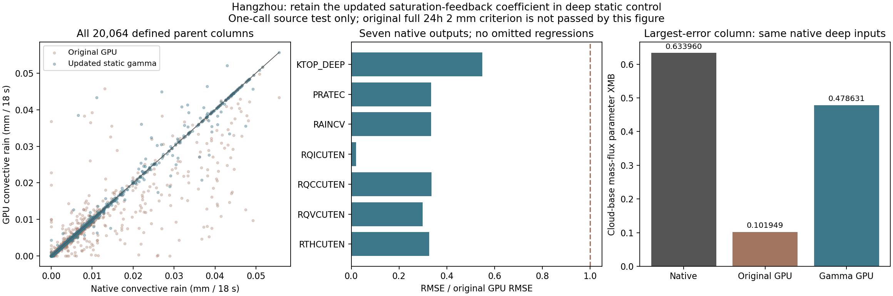
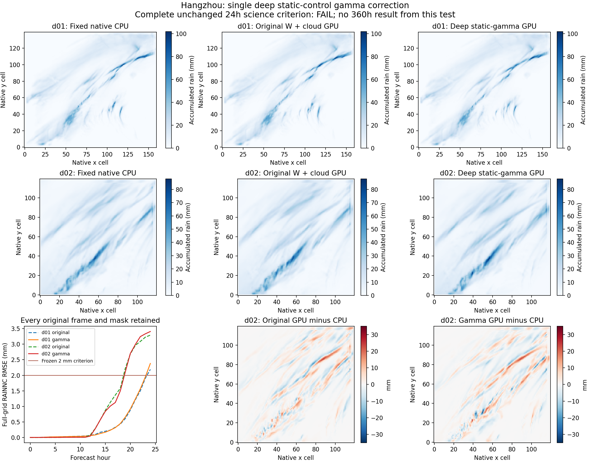

HANGZHOU · COMPLETE NUMERICAL FOLLOW-UP · 14 NOVEMBER 2026
A local source correction did not pass the full-day check.
One source mechanism, measured on the actual input
The native Grell–Freitas static-control calculation updates the thermodynamic factor after perturbing the sounding. The private GPU port discarded that returned factor and integrated cloud work with the earlier value. Changing only this deep-convection binding reduced one-call rainfall RMSE by 66.48%: 0.001392578 to 0.000466770 mm per18 s. All seven common-output RMSE and maximum errors improved, but residuals remained.
The diagrammatic expression shows the source dependency: the cloud-work integral must consume the factor returned for the same perturbed sounding. It is not a replacement physical equation or a fitted correction.


The actual observed 24→25h trajectory matches its neutral control in all377 numeric fields of each domain; one finite parent4801 packet is preserved. The original strict F64 isolated/enclosing byteexact comparison does not pass and remains INCONCLUSIVE. A separate predeclared nativeREAL32-resolution comparison is exact. Rejected constant/precision hypotheses and input-endianness failures are retained in the code archive.
Complete24h consequence: mixed changes, rainfall still fails
One independent controlled24h calculation tested the correction. It reused the existing nativeCPU12MPI3×4 forecast, without rerunning that reference. Same full GFS input, 9/3km and50layers, 18/6s steps, NoahMP4, YSU, Thompson8 and cumulus3/0; the candidate retains the disclosed private W/cloud predicates and adds only the deep static-gamma binding.

Full-day vector figure · All50 domain-hour rows · Every field RMSE and maximum change

| Domain | Hour | Original RMSE(mm) | Candidate RMSE(mm) | 2mm criterion |
|---|---|---|---|---|
| d01 | 19 | 0.608793 | 0.656139 | PASS |
| d01 | 20 | 0.879814 | 0.915676 | PASS |
| d01 | 21 | 1.211713 | 1.235002 | PASS |
| d01 | 22 | 1.502008 | 1.563324 | PASS |
| d01 | 23 | 1.904356 | 1.947711 | PASS |
| d01 | 24 | 2.189254 | 2.380183 | FAIL |
| d02 | 19 | 2.226424 | 2.109657 | FAIL |
| d02 | 20 | 2.685840 | 2.701812 | FAIL |
| d02 | 21 | 2.962375 | 2.990263 | FAIL |
| d02 | 22 | 3.089208 | 3.244631 | FAIL |
| d02 | 23 | 3.226646 | 3.334178 | FAIL |
| d02 | 24 | 3.292000 | 3.408586 | FAIL |
d01 overall RMSE:87 improve,42 worsen,227 equal. d02:105 improve,23 worsen,228 equal. Maximum-error counts differ: d01 49/68/239 and d02 71/52/233 improve/worsen/equal. Times is metadata, not a missing numeric field.
Actual forecast process:900.368s including compilation. All50 files,25 actual times per domain, required3D finite values, positive layer thickness and official24h checkpoint validation passed. These engineering successes do not convert the rainfall FAIL into a scientific PASS.
Raw tiny hydrometeor negatives remain: cloud water minimum −2.742738×10⁻¹²kg/kg; all five species are listed in the downloadable results. Rainfall is nonnegative. No clipping, rainfall correction, threshold relaxation, mask trimming or reference selection was applied.
Native-operator bridge: exact outputs, cost still provisional
A zero-forecast-step feasibility test calls the original nativeGF equations on8 CPU threads through a GPU→host→GPU callback. All seven complete output fields match the preserved native result exactly after canonicalizing integer byte order. The first six float fields already matched byte-for-byte; the initial integer comparison failed only because the saved cloud-top decoder retained big-endian int32. That failed comparison is preserved, not presented as a model defect.
The three warmed complete transfer/packing/operator calls took0.107615,0.094462 and0.094807s. One cold compile/call took0.187924s. Five actual native calls in total were made, including the preserved CPU ABI control; no weather step was advanced.
Adding the largest measured callback latency200 times per simulated hour to the previous GPU rate, with no credit for removed GPU work and all previous conservative downstream allowances retained, gives a provisional26.84h whole-case cost. This exceeds the existing less-than-one-day permission and is not a measured hybrid forecast speed. Neither a new24h nor360h run was started from this benchmark. End-to-end performance and full scientific qualification remain required.
Scope and preserved evidence
This is a model-implementation comparison, not observational rainfall truth, grid convergence or a fifteen-day forecast guarantee. The source correction and native bridge are private research implementations, not an unmodified official all-GPU WRF release. FLEXPART remains CPUOpenMP. Earlier prompt versions and their published films are preserved; none are relabeled as this regional-weather revision.
Full numerical results and provenance · Code and evidence archive